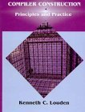

CS-321, 322: Languages and Compiler Design I and II
Syllabus - Winter 2006
Course Reference Number:
CS-322-001, Winter 2006: CRN 40839
When and Where:
Tuesday & Thursday, 2:00PM - 3:50PM
PCAT, Room 138
First Class: Tuesday, January 10, 2006
Holidays: None
Quiz #1: Thursday, February 9 (Tentative)
Quiz #2: Thursday, March 2 (Tentative)
Final Exam: Monday, March 20, 10:15AM-12:05PM
The final will be comprehensive. It will be closed book and closed notes.
Instructor: Prof. Harry Porter
E-Mail: harry@cs.pdx.edu
Web Page:
www.cs.pdx.edu/~harry
Office space at PSU: 115-06 (Fourth Ave Bldg)
Office hours: Directly after class meetings and by arrangement.
Grader: Aaron Kryger
E-Mail: akryger@cs.pdx.edu
Office: 115-??? (Fourth Ave Bldg)
Office Hours: ???
CS-322
Misc. Material - CS-322
Checklist for FIRST meeting:
(pdf, 1 page)
My Java Summary:
html or
(pdf, 62 pages)
Coding Style For Java Programs:
pdf, 8 pages
PCAT Reference Manual:
pdf, 11 pages
SPARC Overview:
pdf file
SPARC Demo Programs:
pdf file
ASCII Byte Encoding Chart:
pdf file
Misc Useful Programs:
directory
Study Guide / Terminology:
pdf file
or
html
Grades for CS-322:
PDF file of point spreadsheet
or
PDF file of bar chart
Homeworks - CS-322
Homework 1:
pdf file
Homework 2:
pdf file
Homework 3:
pdf file
Homework 4:
pdf file
Homework 5:
pdf file
Homework 6:
pdf file
Homework 7:
pdf file
Projects - CS-322
Project 7 Files:
~harry/public_html/compilers/p7/ (SPARC Assembler)
Project 7a Files:
~harry/public_html/compilers/p7a/ (PrettyPrint)
Project 8 Files:
~harry/public_html/compilers/p8/ (IR Code Generation 1)
Project 9 Files:
~harry/public_html/compilers/p9/ (IR Code Generation 2)
Project 10 Files:
~harry/public_html/compilers/p10/ (IR Code Generation 3)
Project 11 Files:
~harry/public_html/compilers/p11/ (Final Code Generation)
Lecture Notes - CS-322
Packet-19 (Intro to CS322):
pdf
Packet-20 (SPARC Architecture - part 1):
pdf
Packet-21 (SPARC Architecture - part 2):
pdf
Packet-22 (SPARC Architecture - part 3):
pdf
Packet-23 (Code Generation-Part 1):
pdf
Packet-24 (Project-8):
pdf
Packet-25 (Tolmach's AST):
pdf
Packet-26 (Project-9):
pdf
Packet-27 (Code Generation-Part 2):
pdf
Packet-28 (Parameter Passing):
pdf
Packet-29 (Code Generation-Part 3):
pdf
Packet-30 (Project 10):
pdf
Packet-31 (Target Gen-Part 1):
pdf
Packet-32 (Target Gen-Part 2):
pdf
Packet-33 (Register Allocation):
pdf
Packet-34 (Tiling):
pdf
Packet-35 (Project 11):
pdf
Packet-36 (Optimization, Part 1):
pdf
Packet-37 (DAG-Based Optimization):
pdf
Packet-38 (Data Flow Analysis):
pdf
Packet-39 (Loop Optimizations):
pdf
Packet-40 (The SPANK Project):
pdf
CS-322: Policy on Late Project Submissions
Each programming project will have a due date and you should plan on submitting your project before that
date. If you submit something late, there is a penalty. The late policy is:
Up to 48 hours late - No points off
Up to 7 days late - 5 points off
Later than 1 week - 5 points off for every additional week, or part thereof
The last assignment will be due approx. 1 week before the final. Every project must be received before the final exam, with absolutely no exceptions. Furthermore, you must complete project 8 before you begin working on project 9, and you must complete project 9 before you begin working on project 10. By complete, I mean you must sucessfully pass all tests. You need not finish project 7 before you begin working on 8, nor must you complete project 10 before you begin working on project 11.
This policy effectively recognizes that events like illness or funerals will occassionally come up, so
projects cannot always be handed in on time.
You are effectively allowed to fall behind. Although there is
a small point loss if things are late, it is not large.
I decided to take off a few points to prevent students from holding on to project submissions
longer than necessary, then handing in everything at the time of the final,
which would overwhelm the grader.
If you fall behind, it is your responsibility to find the time in the remainder of the term to catch up. If you fall behind by more than a week, it will hurt you on other projects later in the term, since you may
run out of time before the final hard deadline, and be unable to complete the last project.
I strongly encourage you to keep up and hand in projects before the due date, and not fall behind. Experience has shown that students who allow themselves to fall behind, often have great difficulty catching
up later.
If projects are handed in within 48 hours of the due date, they will be graded immediately and returned
with the others. When projects are later than that, their grading will be delayed,
possibly by a couple of weeks.
CS-322 Schedule
Week 1 - SPARC Assembly Code
Tuesday (Jan 10)
Thursday (Jan 12)
Week 2 - SPARC Assembly Code
Tuesday (Jan 17)
Reading: Complete "Overview of SPARC Architecture" before class
Thursday (Jan 19)
Reading: Begin reading ch. 7
HW #1 due
Week 3 - Generating Intermediate Code, Runtime Environment
Tuesday (Jan 24)
Reading: Read ch. 7, through page 373
Project P7 due ("SPARC Assembly Language")
Thursday (Jan 26)
HW #2 due
Week 4 - Execution Stack, Function Activations, Parameter Passing
Tuesday (Jan 31)
Reading: Complete ch. 7 before class
Project P8 due ("Generate Intermediate Code, part 1")
Thursday (Feb 2)
HW #3 due
Week 5 - Records, Arrays, Switch Statement
Tuesday (Feb 7)
Reading: Read ch. 8, through page 428, before class
Thursday (Feb 9)
Quiz # 1
Week 6 - Target Code Generation
Tuesday (Feb 14)
Reading: Read ch. 8, through page 467, before class
Project P9 due ("Generate Intermediate Code, part 2")
Thursday (Feb 16)
HW #4 due
Week 7 - Register Allocation
Tuesday (Feb 21)
Project P10 due ("Generate Intermediate Code, part 3")
Thursday (Feb 23)
HW #5 due
Week 8 - Code Generation via Tiling
Tuesday (Feb 28)
Reading: Complete ch. 8 before class
Thursday (Mar 2)
Quiz #2
Week 9 - Introduction to Code Optimization
Tuesday (Mar 7)
Thursday (Mar 9)
HW #6 due
Week 10 - Data Flow Analysis, Loop Optimizations
Tuesday (Mar 14)
Project P11 due ("Generate Target Code")
Thursday (Mar 16)
HW #7 due
Finals Week
Monday (Mar 20)
Exam 10:15 AM (2 hours)
CS-321
Misc. Material - CS-321
Checklist for FIRST meeting:
(pdf, 1 page)
Hello-World Assignment:
(pdf, 1 page)
My Java Summary:
html or
(pdf, 62 pages)
Coding Style For Java Programs:
pdf, 8 pages
PCAT Reference Manual:
pdf, 11 pages
PCAT Sample Programs:
directory
Terminology / Study Guide for Exams:
pdf file
or
html
Grades for CS-321:
PDF file of point spreadsheet
or
PDF file of bar chart
Homeworks - CS-321
Homework 1:
pdf file
Homework 2:
pdf file
Homework 3:
pdf file
Homework 4:
pdf file
Homework 5:
pdf file
Homework 6:
pdf file
Projects - CS-321
Project 0 Files:
~harry/public_html/compilers/p0/ (Tree)
Project 1 Files:
~harry/public_html/compilers/p1/ (E Language)
Project 2 Files:
~harry/public_html/compilers/p2/ (Lexer)
Project 3 Files:
~harry/public_html/compilers/p3/ (Parser 1)
Project 4 Files:
~harry/public_html/compilers/p4/ (Parser 2-Build AST)
Project 5 Files:
~harry/public_html/compilers/p5/ (Checker 1)
Project 6 Files:
~harry/public_html/compilers/p6/ (Checker 2)
Lecture Notes - CS-321
Packet-1 (Course Introduction):
pdf
Packet-2 (Introduction to Java - optional, not covered in class):
pdf
Packet-3 (The Tree Assignment):
pdf
Packet-4 (Intro-part 1):
pdf
Packet-5 (Intro-part 2):
pdf
Packet-6 (Lexical-part 1):
pdf
Packet-7 (Lexical-part 2):
pdf
Packet-8 (Lexical-part 3):
pdf
Packet-9 (Lexical-part 4):
pdf
Packet-10 (Project 3-Parser):
pdf
Packet-11 (Syntax-Part 1):
pdf
Packet-12 (Project 4-Abstract Syntax Tree):
pdf
Packet-13 (Syntax-Part 2):
pdf
Packet-14 (Syntax-Part 3):
pdf
Packet-15 (Project 5):
pdf
Packet-16 (Semantics-Part 1):
pdf
Packet-17 (Project 6):
pdf
Packet-18 (Semantics-Part2):
pdf
Bonus Question
Answers to the bonus question
CS-321 Schedule
Week 1 - Overview of Compiling
Tuesday (Sept 27)
Thursday (Sept 29)
Complete HelloWorld Assignment
Week 2 - Lexical Analysis and Scanning
Tuesday (Oct 4)
Reading: Complete ch. 1 before class
Project P0 due ("Working with trees")
Thursday (Oct 6)
HW #1 due
Week 3 - Lexical Analysis and Scanning
Tuesday (Oct 11)
Reading: Complete ch. 2 before class
Project P1 due ("The E Language")
Thursday (Oct 13)
HW #2 due
Week 4 - Context Free Grammars
Tuesday (Oct 18)
Reading: Complete ch. 3 before class
Project P2 due ("Build a lexical scanner")
Thursday (Oct 20)
HW #3 due
Week 5 - Top-Down Parsing
Tuesday (Oct 25)
Reading: Complete ch. 4 before class
Project P3 due ("Build a parser")
Thursday (Oct 27)
Quiz # 1
Week 6 - Top-Down Parsing
Tuesday (Nov 1)
Reading: Begin reading ch. 5
Project P4 due ("Build the Abstract Syntax Tree")
Thursday (Nov 3)
HW #4 due
Week 7 - Bottom-Up Parsing
Tuesday (Nov 8)
Reading: Complete ch. 5 before class
Thursday (Nov 10)
HW #5 due
Week 8 - Bottom-Up Parsing
Tuesday (Nov 15)
Reading: Begin reading ch. 6
Project P5 due ("Semantic Analysis-part 1")
Thursday (Nov 17)
Quiz #2
Week 9 - Attribute Grammars and Semantic Analysis
Tuesday (Nov 22)
Reading: Complete ch. 6 before class
Thursday (Nov 24)
Thanksgiving Holiday - no class
Week 10 - Attribute Grammars and Semantic Analysis
Tuesday (Nov 29)
Project P6 due ("Semantic Analysis-part 2")
Thursday (Dec 1)
HW #6 due
Finals Week
Monday (Dec 5)
Exam 10:15 AM (2 hours)
Course Description
This course studies the principles of programming languages with an emphasis on programming language implementation and compiler design. This includes various techniques for describing and defining a language, as well as techniques for implementing compilers. The course is centered on a large programming project-the construction of a complete compiler for a small programming language-which will be completed over the two term sequence CS 321 and CS 322. Topics to be covered over the two terms include: lexical analysis, syntactic analysis, recursive descent parsing, LR parsing, syntax-directed translation, type checking, run-time environments, code generation, code optimization, and various language design issues.
This is a two term sequence. Students are strongly encouraged to take CS 321 and CS 322 in consecutive quarters from the same instructor.
Textbooks

Required:
Compiler Construction: Principles and Practice,
Kenneth C. Louden, PWS Publishing,
1997, ISBN 0-534-93972-4.
This is our primary textbook and
will be available through the PSU Bookstore.
Required:
You will definitely need a book on Java, but the choice is yours.
The Java Programming Language
Here are two recommended books on Java:
The Java Programming Language, 3rd Edition,
Ken Arnold, James Gosling, and David Holmes, Addison-Wesley, 2000.
ISBN 0-201-70433-1.
Thinking in Java, 2nd Edition,
Bruce Eckel, Prentice-Hall, 2000.
This book is also available free on the web at
www.mindview.net/Books/TIJ
Related Websites
Harry Porter's Java Summary:
html or
(pdf, 62 pages)
Java Web Site:
java.sun.com/j2se/1.4/docs/index.html
Java Class Documentation (Frames):
java.sun.com/j2se/1.4/docs/api/index.html
Java Class Documentation (No Frames):
java.sun.com/j2se/1.4/docs/api/overview-summary.html
Prerequisites
The official prerequisites are:
-
CS 202 (Programming Systems)
-
CS 300 (Software Engineering)
-
CS 311 (Computational Structures)
Students will work on a large programming project; as such,
they will need the previous experience in writing and debugging large programs
provided in classes like CS 202 and CS 300.
Java will be used as the implementation language for the compiler project, but no previous experience with Java is required.
This course will look at regular languages, finite-state automata, and context-free languages in some depth; CS 311 will have provided the student's first exposure to these topics.
The prerequistes for the second term (CS-322) also include having passed the first term (CS-321).
In the second term (CS-322), you will learn a new machine architecture, the SPARC architecture.
We will assume you are familiar with the concepts of machine language and that you have written
assembly language programs before, but we will not assume any familiarity with the SPARC architecture.
It is the student's ressponsibility to ensure that he/she has the appropriate background before attempting this class.
Programming Projects
Over the course of two terms, students will work on a single
large programming project, which is the implementation of a compiler
for the "PCAT" language.
This project will be implemented in Java.
There will be approximately 6 programming projects during the first term,
taking about 2 weeks each.
All but the first project are part of the overall compiler project.
Since later programs will make use of earlier programs, it is critical
that students complete all projects on time.
You may develop your code on any machine and operating system you like, as long as it supports Java (SDK version 1.2 or later, corresponding to "Java 2").
However, the code you submit will be tested and graded on the CS department's
Sparc machines, using SDK version 1.4.
It is your responsibility to make sure that your code works properly on
this system; since Java is highly portable, this should not be
a significant difficulty.
Students must not work together:
All programs must be designed and coded independently.
You must compose and type in every line code you submit,
with the exception of code I distribute to the class.
Any form of code sharing will be considered cheating.
Grading will be based on style, organization, and aesthetics;
submissions will also be tested for correctness.
Late programming submissions will not be accepted without prior approval.
For CS-322:
There will be approximately 5 programming projects during the second term,
taking approximately 1-2 weeks each.
Later programs will make use of earlier programs, so it is critical
that students complete all projects.
In CS-321, it is assumed that you wrote a lexical analyser, parser, and
type-checker for the PCAT language.
It is assumed that you are familiar with PCAT from CS-321.
In CS-322, we will complete the compiler. In outline, the projects will be:
-
A SPARC assembly language program (not part of the compiler) (p7)
-
Generate intermediate code from abstract syntax tree (p8, p9, p10)
-
Generate SPARC assembly code from intermediate code (p11)
The compiler projects in this term will make use of the code written last term, in my section of CS-321
If you did not take CS-321 from me last term, I will provide .jar files
that can be linked with the code you write this term.
In other words, I will provide the lexer, parser, and type-checker and, during CS-322, you will create the back-end to give a full, working compiler.
(There are subtle differences in the PCAT language used in other sections of this course which make it impractical to
use a front-end implemented in another instructor's section of CS-321.)
Homework Assignments
There will be approximately 5 homework assignments per term, generally weekly and due at the beginning of class. Late homeworks will not be accepted without prior approval.
Class Mailing List
A "MailMan" e-mailing list will be maintained for this class.
Students must subscribe to this list.
From time to time I will post notices about the class and hints/comments
about assignments.
Students are encouraged to send mail to the list, too. However, please be careful to send your completed project code to the proper address, and not to the mailing list!
To subscribe, go to the following web page and
enter your email address and a password and click "subscribe".
webmail.cecs.pdx.edu/mailman/listinfo.cgi/cs321-001
The MailMan program will email you a confirmation message. You must reply, but you can simply hit your email "reply" button. After being adding to the mailing
list you will get a "welcome" message from me.
To post a message to all the list members, send email to:
cs321-001@cs.pdx.edu
For additional documentation, see
http://staff.imsa.edu/~ckolar/mailman/mailman-userguide-0.1.pdf (pdf, 8 pages)
http://www.list.org/mailman-member
(By the way, if Internet Explorer does not work with MailMan on the Mac, use the "Safari" web browser instead.)
Using "FTP" to Obtain Class Files
You may wish to use an "ftp" program to transfer class files
from my directory (the "remote") to your computer (the "local").
If you want to use the standard UNIX ftp program, type the following command:
ftp anonymous@ftp.cs.pdx.edu
Then, change to my directory. For example, to get to the directory
containing the files for project 1, at the "ftp>" prompt type:
cd /pub/users/harry/compilers/p1
To list all the files in the remote directory, type:
ls
To copy all files from the remote directory into the current directory on your local machine, type
mget *
To suppress verbose interaction, answer "a" to the "mget filename [anpqy?]?" prompt. You can also type "help" or "quit" to leave ftp.
For further info, in UNIX type:
man ftp
Grading
The final exam may test on material covered only in class and on material covered only in the reading assignments. Your grade will be based approximately, as follows. These percentages are tentative; I may change them.
-
Homeworks 10%
-
Programs 29%
-
Quizes 29%
-
Final Exam 29%
-
Attendance 3%
I will compute your grade as follows. Each homework will be worth some number of points. For example, HW #2 might be worth 25 points. Each homework will also count for a certain percentage of your grade. For example, HW #2 might be worth 3% of your final grade. The actual number of points you make on an individual assignment will then be divided by the number of points earned by the high scorer for that assignment and the result will be multiplied by the percentage weight of the assignment to give a normalized number of points. (For example, if you got 18 points on HW #2 and the highest score on the assignment was 23 points, you would get 2.35 normalized points, i.e., (18/23) * 3%.) Likewise, for the programming projects and the final exam, I will compute your normalized points, based on the percentage weights for each of the programs and the final. Summing the normalized points from each of your homeworks, programs, and the final, you will then have a net score between 0 and 100. I will then sort everybody on net score and give people with more points better grades. Grading will be based on a curve; in other words, I will select the range for A's, B's, etc., after seeing how the net scores distribute. I will select the percentage weights of the individual homeworks and programs at the end of the term (keeping within the general percentages listed above), since some assignments may be harder than others and will deserve larger weights in the final score.
Incompletes will not be given.
Attendance
Successful students will arrive on-time, relaxed and full of curiosity.
Attendance in class is mandatory;
it will be checked and will count for part of your grade.
Academic Dishonesty
The programming project is not a group project.
You must create the code on your own!
I encourage students to discuss the material in this class.
Feel free to discuss the programming projects amongst yourselves, but only at a higher-level than the code. Do not share code.
Do not work together on any programming project in this class. Do not look at anyone else's code. Do not allow anyone to use your code. Every line of code you submit must be your own work, except of course the code I provide. You may discuss the assignments with other students, but only in general terms. You may not look at someone else's code or share Java code.
It is NOT okay to look at someone else's code, even for the purposes of helping that person or for comparing your different approaches.
Each student must do the coding alone. You must type in every line of code you submit. You must not copy another student's code. Do not look at some one else's code, then turn around and type that code in.
It will be considered cheating to copy code.
It will be considered cheating to decompile or look inside any .class or .jar file I provide. If you have questions about what these files do, just ask me!
It will be considered cheating to send your project code to the class mailing list,
even if it is an accident.
I simply cannot allow students to send their completed solution code to the mailing list!
Class Cancellation
Snow Closure:
For inclement weather information, call the University switchboard, 725-3000,
for a recorded message about university-wide class cancellation.
Snow closure info is also available at:
www.flashnews.net/pdx.html (click on "View Current Info").
Other Cancellations:
If I should need to cancel class for any reason, I will email the mailing list.
YAPP: An SLR Parser Written in PCAT
YAPP (Yet Another PCAT Parser) is an SLR generator written in PCAT.
YAPP can read in a grammar and a sample string.
It will build parsing tables according to the SLR algorithm and then use those tables to parse the sample string.
YAPP can easily handle a grammar for the PCAT language and can parse a PCAT program.
YAPP can even parse itself.
YAPP is the largest known PCAT program in the universe, consisting of more than 2100 lines of PCAT code.
Over the years that CS-321 has been taught, there have been many, many PCAT parsers produced. YAPP is not just another PCAT parser.
Click here
to see the YAPP source code.
Click here
to look at the system in more detail.
Problems / Comments on This Web Page
Send email to:
harry@cs.pdx.edu